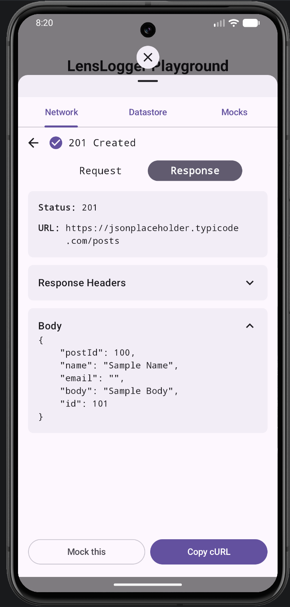
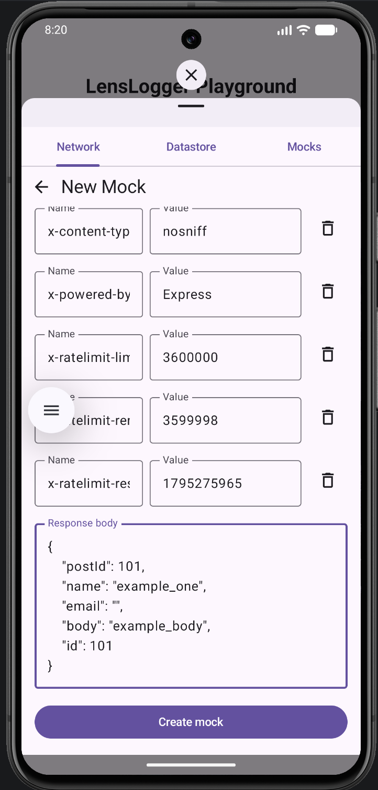
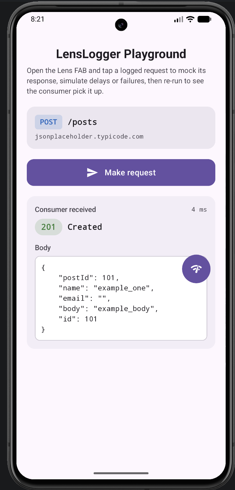
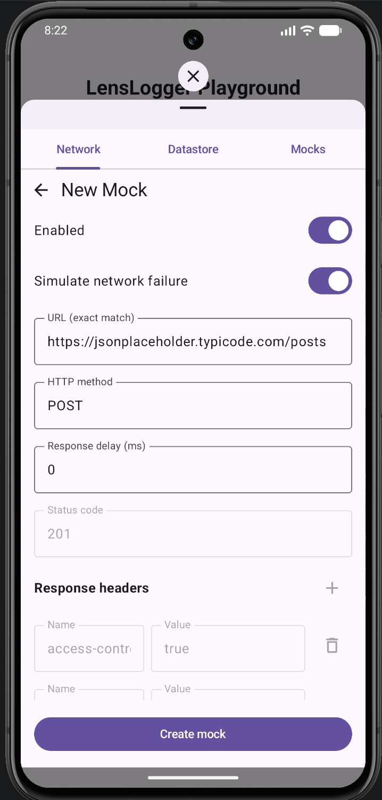
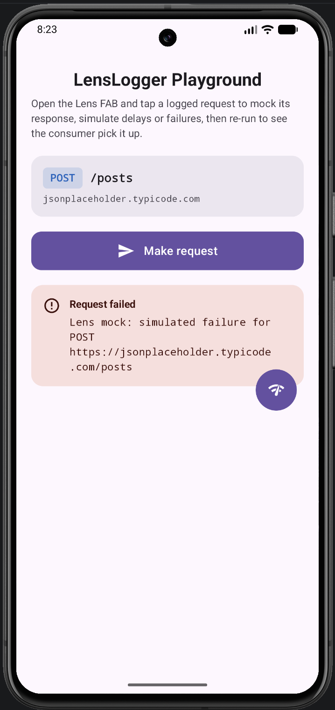

NETWORK MOCKING
Control the response your app sees.
Create a mock rule from a captured call or add one from the Mocks tab. Match a request by its full URL and HTTP method, then return a custom status, headers, and body—or simulate a network failure.
STEP 01
Start with a captured request
- Open the Lens FAB and go to the Network tab.
- Find the request you want to replace, then tap it to inspect its details.
- Choose Mock this. The editor starts with that request's URL and method and, when available, the captured response status, headers, and body.

You can also open the Mocks tab and tap the plus button to create a rule manually.
STEP 02
Configure the rule
Set the request match and the response the app should receive:
- Enabled: turn the rule on or off.
- URL: full request URL to match exactly.
- HTTP method: method to match; comparison ignores letter case.
- Response delay: time to wait before returning the result, in milliseconds.
- Status code: synthetic response status from 100 through 599.
- Response headers: add, edit, or remove header name/value pairs.
- Response body: response text returned to the app, often JSON.

STEP 03
Save the rule and replay the call
- Tap Create mock. The rule appears in the Mocks list.
- Make the same request again from your app.
- Check the screen or state that consumes the response, then open Network history to inspect the result.


Mocked calls are marked with a MOCK badge in the Network history. From the Mocks tab you can toggle a rule, edit it, or delete it.
FAILURE AND LOADING STATES
Simulate failures or slow responses
Turn on Simulate network failure to make a matched request throw a synthetic I/O failure. Use this to exercise your app's retry, error, and empty-state behavior. Add a response delay to test loading indicators; the configured delay is applied before either a mock response or simulated failure.
When failure simulation is enabled, status, headers, and body fields are disabled because no response is produced.


HOW MATCHING WORKS
Match the exact request
A rule applies when it is enabled, the complete request URL equals the rule URL, and the HTTP method matches without regard to case. If there are multiple enabled rules with the same URL and method, the first matching rule is selected; keep only the scenario you want enabled for a given match.
enabled
+ exact full URL
+ same HTTP method→ synthetic resultRules are saved locally by LensLogger and are available again when the app is reopened.
TROUBLESHOOTING
If the live response still appears
- Confirm the rule is enabled in the Mocks list.
- Compare the rule URL to the full URL sent by the request, including scheme, host, path, and query string.
- Check the HTTP method.
- Make sure the request uses the Ktor or OkHttp client configured with LensLogger.
- If you have duplicate enabled rules for the same URL and method, disable the rules for other scenarios.
For help finding and inspecting calls, see the Network Visualizer guide.